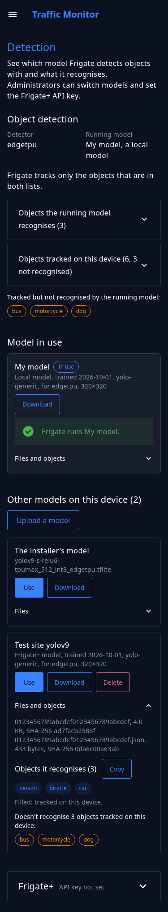
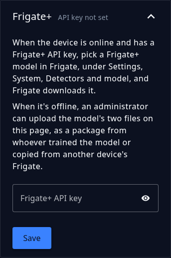

Choose the detection model¶
See which model Frigate detects with and which objects it recognises, upload, use, download, and delete detection models from the control app, and set the Frigate+ API key.
The control app's Detection page shows what the device looks for and which AI model does the looking, and lets the administrator change the model without SSH. Frigate runs the model on the device's detector: a Coral or Hailo accelerator, or the processor when there's none. To get a better model for a difficult site, see Better models.
The Detection page¶
Detection is in the control app's menu, after Device. The page opens with a line on what it's for, then four sections:
- Object detection gives the Detector, such as
edgetpufor a Coral, and the Running model, then what the running model recognises and what the device tracks. - Model in use is the model Frigate runs. The section is left out when the page can't tell which model that is.
- Other models on this device lists the rest, and its title counts them.
- Frigate+ is how to get a Frigate+ model, and where administrators set the API key.

Each model is a card with its name, its kind (Frigate+ or local), and when it was trained and what it's built for (when it says). Select Files and objects on a card to see its files, with their sizes and the start of each file's SHA-256 hash, and the objects it recognises. A model with no list of objects has Files instead. A mark says when the model is:
| Mark | Meaning |
|---|---|
| In use | Frigate runs this model. |
| can't run on this detector | The model is built for another detector than the device's, so Use is off. |
| incomplete | The model has its file but not its .json, or the other way round. |
The model the installer set up is shown as The installer's model. It has no .json, and it can't be deleted. A device without a Coral has no installer's model: Frigate then runs its own built-in model until you choose another, and the page shows it as Frigate's built-in model, which can't be deleted either.
Everyone who can log in sees the models, the label lists, and the Frigate+ text. Administrators also get Upload a model, under the Other models on this device heading, then Use, Download, and Delete on each model, and the Frigate+ API key. While Frigate runs another model, the device's default (the installer's model, or Frigate's built-in model on a device without a Coral) has a Use of its own.
When Frigate isn't answering, the page says so and shows what Frigate's config file says. The same when Frigate started in safe mode because it couldn't use its config: the page says so, nothing is detected meanwhile, and Use on a model, or on the installer's model, gives Frigate a config it can run.
Upload a model¶
A model is a model file and a small .json file beside it, its sidecar, which tells Frigate how to use it. Choose Upload a model under Other models on this device, then pick one of these:
- A package from whoever trained the model: a zip or tar.gz with the model file and its
.jsonat the top level, not inside a folder. A zip must be stored or deflate-compressed, which is what ordinary zip tools make. If the package has aSHA256SUMSfile, the device checks the files against it. - The two files, the model file and its
.json. The.jsonmust be named for the model file:mine.tfliteandmine.tflite.json. The page sends the.jsonfirst. - A model file alone. The page then asks for what Frigate needs to know about it and writes the
.jsonfor you. The settings are a name for the model list (the file name when left empty), the model type, the width and height of its input, the input tensor, the pixel format, optionally the input data type, and the labels, one per line in the model's order. On a device with a Coral or Hailo accelerator, the fields start with Frigate's example for that detector. The values come from the model's documentation; Frigate's reference config lists what each setting accepts. - A
.jsonalone, to finish a model file that's on the device already.
The page shows every file when you pick, because a Frigate+ model's file has no extension.
The limits are 100 MB for a model file, 2 MB for a .json, and at least 512 MB of free storage left afterwards. A model whose name is already on the device is refused; delete the old one first. A model file can't be named default, which the page keeps for the device's default. A model has to be built for the device's detector. The page marks one that isn't, and won't use it.
Take models only from a source you trust
A model is code that the detector runs. A model from an unknown source can make the device count wrongly or fail. Upload only models you trained, or that come from a source you trust.
Use a model¶
Choose Use on a model and confirm. Frigate checks the whole configuration with the model in it and saves it, and then the device restarts Frigate. A restart takes about a minute, and the device counts nothing meanwhile. The page asks every few seconds and says when Frigate runs the model. If Frigate hasn't come back after 90 seconds, the page says so and links to the Status page.
If Frigate refuses the change, the page shows Frigate's reason, and nothing changes. When Frigate isn't answering at all, the device edits Frigate's config.yml itself, keeps a backup beside it, and restarts Frigate. That's how Use on The installer's model gets a device out of a bad choice without SSH. On a device without a Coral, Use on Frigate's built-in model does the same.
The page refuses a Use in these cases:
- Frigate is restarting. Try again in a minute.
- The device's detector can't be told, because Frigate isn't answering and its config file can't be read, so the model can't be checked against it.
- Frigate's config sets a model inside a detector, which would override this one. Remove that model in Frigate's config editor first.
- The installer's model file is gone from the device.
Download a model¶
Download saves a zip with the model's file, its .json, and a SHA256SUMS file. The files are byte for byte what's on the device, so the zip is a backup, or a way to put the same model on another device with Upload a model. A .json keeps every field it came with, including ones the page doesn't show.
A model without a .json the device can read downloads as its model file alone, under the file's own name, and the page says so before it starts. Whoever uploads that file is asked for what Frigate needs to know about it. The installer's model and Frigate's built-in model download this way too. A device keeps their file names for its own copies, so rename such a file before you upload it.
Delete a model¶
Delete asks first, then removes both of the model's files. It can't remove the model Frigate runs, the installer's model, or Frigate's built-in model. To delete the model that's running, use another model first, such as The installer's model.
What the model recognises¶
The Object detection section lists two sets of objects. Each is closed until you select its title, which counts the objects, and each has a Copy button:
- Objects the running model recognises is what the running model can detect. The list says where it came from: Frigate when it answers, otherwise the model's
.jsonor the installer's labels file. Objects the device also tracks are filled. Frigate fills the gaps in a model's label map with entries namedunknown, which the page leaves out, so its count can be lower than the label map's. - Objects tracked on this device is the objects Frigate is set to track, from its
objects:tracklists. Objects the running model doesn't recognise are amber, and the title counts them.
Frigate tracks only the objects in both lists. To track more of what the model recognises, change the lists in Frigate's configuration editor; see Tune object detection. An object that's tracked but not recognised is also named under the two lists, so you see it while they're closed. The model can't detect it, so the device never counts it.
Each model's card has its own list under Files and objects, read from that model's .json or, for the installer's model, its labels file. Frigate's built-in model has none. On the other models' cards, a line names the tracked objects that model doesn't recognise, which the device would stop counting if you switched to it.
The running model's list and its card are read in different ways, but they should agree. When Frigate's list has different objects, a line under the facts says "Frigate reports a different list than this model's .json." This is rare, and it usually means someone edited the label map in Frigate's config on purpose.
Frigate+¶
Frigate+ trains models on snapshots from your device. There are two ways to get one onto it:
- Online: when the device has internet and a Frigate+ API key, pick the model in Frigate, under Settings > System > Detectors and model, and Frigate downloads it. Then choose Use here if Frigate doesn't run it already.
- Offline: upload the model's two files on this page, as a package from whoever trained the model, or copied from another device's Frigate. See A device without internet.

Administrators enter the API key under Frigate+, the last section of the page, which is closed until you select its title. The Status page's Set the key opens it. The key is kept with the device's other secrets, not in config.yml.
- The page never shows the key back. The section's title says whether the key is set, its last four characters for a key of 12 or more characters, and "in use" while Frigate runs a Frigate+ model.
- Save stores what you typed. A key is 36 characters, a colon, and 40 lowercase letters or digits, as Frigate+ shows it; the page refuses anything else. The eye icon shows the key while you type.
- Remove asks first, then empties the key. Without a key, snapshots can't be submitted to Frigate+. A Frigate+ model whose files are on the device keeps running; one that isn't downloaded yet stops Frigate until the key is set again, and the Status page's Frigate+ check says so.
- Saving or removing restarts Frigate, which takes about a minute. The device counts nothing meanwhile.
The ThingsBoard and Plate Recognizer keys are on the Device page.